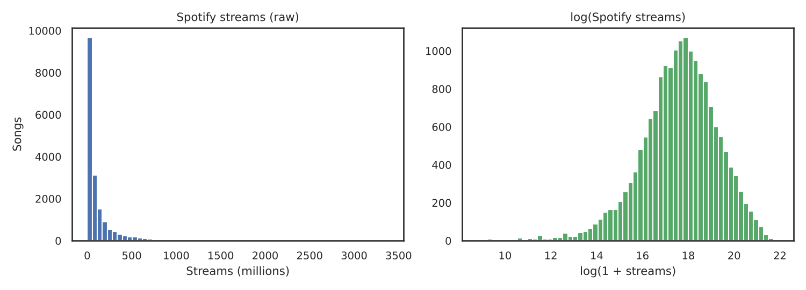
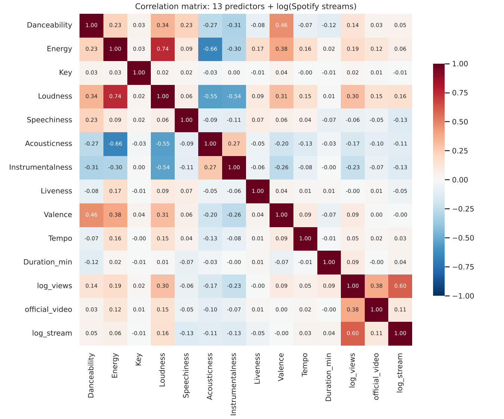
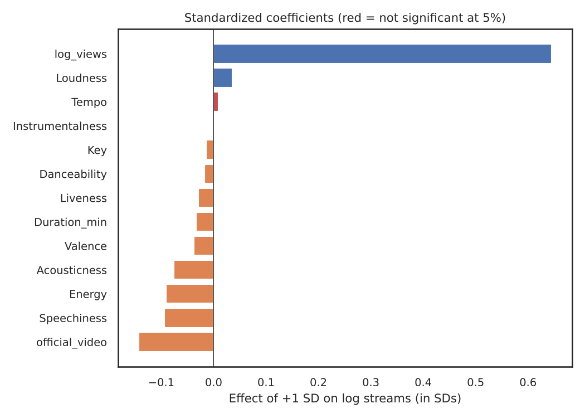
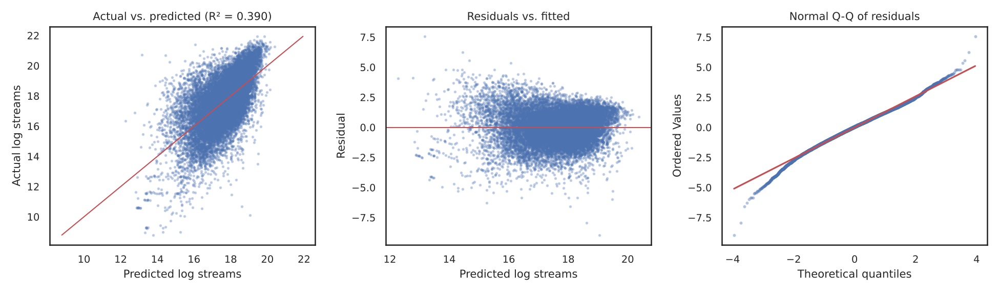

Regression Analysis of Top Hits in Music
A multivariate OLS regression that predicts how much a song is streamed on Spotify from 11 Spotify audio features and 2 YouTube variables. Built in Python on the Spotify and Youtube Kaggle dataset (20,718 songs).
01. Question
What makes a hit stream?
Can a song's sound (how danceable, loud, acoustic or wordy it is) plus its reach on YouTube explain its popularity on Spotify? The target is log(1 + Spotify streams). The 13 predictors are Danceability, Energy, Key, Loudness, Speechiness, Acousticness, Instrumentalness, Liveness, Valence, Tempo, Duration, log(YouTube views) and an official video flag.
02. Data cleaning
From 20,718 rows to 17,966
- Converted
Licensedandofficial_videofrom True/False to 1/0 and duration from milliseconds to minutes. - Removed rows missing any model variable (576 songs have no stream count; 470 have no YouTube match).
- Removed duplicate Spotify tracks that matched several YouTube videos (2,752 rows dropped in total).
- Log transformed streams and views. Raw streams have a skewness of 4.11; after the log it is -0.62.

03. Exploratory analysis
YouTube views carry most of the signal
The strongest single correlate of log streams is log YouTube views (r = 0.60). Among audio features, loudness (r = 0.16) is the strongest positive and speechiness (r = -0.13) the strongest negative.

04. Model
OLS results
R² = 0.3900 · Adjusted R² = 0.3896 · F(13, 17,952) = 882.9, p < 0.001. Grey rows are not significant at 5%. Standardized β is the change in standard deviations of log streams for a one SD change in the predictor.
| Variable | Coef | Std err | t | p | Std β | VIF |
|---|---|---|---|---|---|---|
| Intercept | +13.0539 | 0.1246 | 104.79 | <0.001*** | ||
| Danceability | -0.1785 | 0.0745 | -2.40 | 0.017* | -0.018 | 1.62 |
| Energy | -0.7002 | 0.0834 | -8.40 | <0.001*** | -0.091 | 3.45 |
| Key | -0.0068 | 0.0027 | -2.50 | 0.013* | -0.015 | 1.00 |
| Loudness | +0.0129 | 0.0038 | 3.41 | <0.001*** | +0.036 | 3.23 |
| Speechiness | -1.4674 | 0.0953 | -15.40 | <0.001*** | -0.094 | 1.10 |
| Acousticness | -0.4392 | 0.0465 | -9.45 | <0.001*** | -0.076 | 1.92 |
| Instrumentalness | -0.0145 | 0.0622 | -0.23 | 0.816 | -0.002 | 1.54 |
| Liveness | -0.2984 | 0.0608 | -4.91 | <0.001*** | -0.029 | 1.07 |
| Valence | -0.2509 | 0.0484 | -5.18 | <0.001*** | -0.037 | 1.53 |
| Tempo | +0.0005 | 0.0003 | 1.57 | 0.117 | +0.009 | 1.07 |
| Duration (min) | -0.0363 | 0.0065 | -5.62 | <0.001*** | -0.033 | 1.04 |
| log(YouTube views) | +0.3876 | 0.0040 | 97.16 | <0.001*** | +0.645 | 1.30 |
| Official video (1/0) | -0.5684 | 0.0252 | -22.59 | <0.001*** | -0.143 | 1.18 |
*** p < 0.001 · ** p < 0.01 · * p < 0.05. All VIFs are below 3.5, so multicollinearity is not a concern.

05. Validation
The fit holds on unseen data
Cross validated R² per fold: 0.394 · 0.383 · 0.398 · 0.380 · 0.387. Train R² 0.389 vs. held out test R² 0.394, so the model is not overfitting.
Residuals center on zero with a slightly heavy left tail: songs that stream far less than their YouTube reach predicts.
| Predictors | R² |
|---|---|
| 11 audio features only | 0.064 |
| 2 YouTube variables only | 0.371 |
| All 13 | 0.390 |

06. Findings
What the model says
- Cross platform reach dominates. 10% more YouTube views goes with about 3.8% more Spotify streams. YouTube variables alone explain R² = 0.37; sound alone explains 0.06.
- Sound still matters at the margin. Holding reach constant, wordier, more acoustic, higher energy and longer tracks stream less; louder tracks stream more.
- Official videos flip sign. They correlate positively with streams but get a negative coefficient once views are controlled: official videos pull more YouTube views per Spotify stream.
- About 61% of the variation is unexplained. Marketing, playlist placement, artist fame and release date are not in the data.
07. Code
Full Python script
pandas, NumPy, SciPy, scikit-learn, matplotlib and seaborn. Run with python spotify_youtube_regression.py Spotify_Youtube.csv.
"""
Regression Analysis of Top Hits in Music
Dataset: "Spotify and Youtube" (Kaggle, salvatorerastelli/spotify-and-youtube) -> Spotify_Youtube.csv
Question: How well can a song's audio features plus its YouTube reach predict
its popularity on Spotify (total streams)?
Model: multivariate OLS regression, 13 predictors
- 11 Spotify audio features: Danceability, Energy, Key, Loudness, Speechiness,
Acousticness, Instrumentalness, Liveness, Valence, Tempo, Duration (min)
- 2 YouTube variables: log(YouTube views), official_video (1/0)
Target: log(Spotify streams)
Run: python spotify_youtube_regression.py Spotify_Youtube.csv
Needs: pandas, numpy, scipy, scikit-learn, matplotlib, seaborn
"""
import json
import sys
from pathlib import Path
import matplotlib
matplotlib.use("Agg")
import matplotlib.pyplot as plt
import numpy as np
import pandas as pd
import seaborn as sns
from scipy import stats
from sklearn.linear_model import LinearRegression
from sklearn.model_selection import KFold, cross_val_score, train_test_split
CSV = sys.argv[1] if len(sys.argv) > 1 else "Spotify_Youtube.csv"
OUT = Path(sys.argv[2]) if len(sys.argv) > 2 else Path("output")
OUT.mkdir(parents=True, exist_ok=True)
results = {}
# ---------------------------------------------------------------- 1. Load
df = pd.read_csv(CSV).drop(columns=["Unnamed: 0"])
results["raw_shape"] = list(df.shape)
results["missing"] = {c: int(v) for c, v in df.isna().sum().items() if v > 0}
# ---------------------------------------------------------------- 2. Clean
for c in ["Licensed", "official_video"]:
df[c] = df[c].map({True: 1, False: 0, "True": 1, "False": 0})
df["Duration_min"] = df["Duration_ms"] / 60000
df["log_stream"] = np.log1p(df["Stream"]) # streams are extremely right-skewed
df["log_views"] = np.log1p(df["Views"])
AUDIO = ["Danceability", "Energy", "Key", "Loudness", "Speechiness",
"Acousticness", "Instrumentalness", "Liveness", "Valence",
"Tempo", "Duration_min"]
YOUTUBE = ["log_views", "official_video"]
X_COLS = AUDIO + YOUTUBE # 13 predictors
Y = "log_stream"
before = len(df)
df = df.dropna(subset=X_COLS + [Y]).drop_duplicates(subset=["Uri"]).reset_index(drop=True)
results["rows_after_cleaning"] = len(df)
results["rows_dropped"] = before - len(df)
results["skew"] = {"Stream": round(float(pd.read_csv(CSV)["Stream"].skew()), 2),
"log_stream": round(float(df[Y].skew()), 2)}
# ---------------------------------------------------------------- 3. EDA
desc = df[X_COLS + ["Stream", "Views"]].describe().T[["mean", "std", "min", "50%", "max"]]
results["describe"] = desc.round(3).reset_index().rename(columns={"index": "var"}).to_dict("records")
corr = df[X_COLS + [Y]].corr()
results["corr_with_target"] = corr[Y].drop(Y).sort_values(key=abs, ascending=False).round(3).to_dict()
sns.set_theme(style="white", font_scale=0.85)
fig, ax = plt.subplots(figsize=(9, 7.5))
sns.heatmap(corr, cmap="RdBu_r", center=0, vmin=-1, vmax=1, annot=True, fmt=".2f",
annot_kws={"size": 7}, square=True, cbar_kws={"shrink": .7}, ax=ax)
ax.set_title("Correlation matrix: 13 predictors + log(Spotify streams)")
fig.tight_layout(); fig.savefig(OUT / "fig1_correlation.png", dpi=150); plt.close(fig)
fig, axes = plt.subplots(1, 2, figsize=(10, 3.6))
axes[0].hist(df["Stream"] / 1e6, bins=60, color="#4C72B0")
axes[0].set(title="Spotify streams (raw)", xlabel="Streams (millions)", ylabel="Songs")
axes[1].hist(df[Y], bins=60, color="#55A868")
axes[1].set(title="log(Spotify streams)", xlabel="log(1 + streams)")
fig.tight_layout(); fig.savefig(OUT / "fig2_target_distribution.png", dpi=150); plt.close(fig)
# ---------------------------------------------------------------- 4. OLS (full sample)
def ols(X, y):
"""OLS with intercept; returns coefficient table and fit statistics."""
Xc = np.column_stack([np.ones(len(X)), X.values])
n, k = Xc.shape
beta, *_ = np.linalg.lstsq(Xc, y.values, rcond=None)
resid = y.values - Xc @ beta
sse, sst = resid @ resid, ((y - y.mean()) ** 2).sum()
r2 = 1 - sse / sst
adj = 1 - (1 - r2) * (n - 1) / (n - k)
sigma2 = sse / (n - k)
se = np.sqrt(np.diag(sigma2 * np.linalg.inv(Xc.T @ Xc)))
t = beta / se
p = 2 * stats.t.sf(np.abs(t), n - k)
f = (r2 / (k - 1)) / ((1 - r2) / (n - k))
table = pd.DataFrame({"coef": beta, "std_err": se, "t": t, "p_value": p},
index=["Intercept"] + list(X.columns))
return table, dict(n=n, k=k - 1, r2=r2, adj_r2=adj, f_stat=f,
f_p=stats.f.sf(f, k - 1, n - k), rmse=np.sqrt(sse / n)), resid, Xc @ beta
table, fit, resid, fitted = ols(df[X_COLS], df[Y])
# standardized betas: effect of a 1-SD change, comparable across predictors
z = (df[X_COLS] - df[X_COLS].mean()) / df[X_COLS].std()
std_table, *_ = ols(z, (df[Y] - df[Y].mean()) / df[Y].std())
table["std_beta"] = std_table["coef"]
table.loc["Intercept", "std_beta"] = np.nan
# VIF: multicollinearity check
def vif(X):
out = {}
for c in X.columns:
others = X.drop(columns=c)
r2 = LinearRegression().fit(others, X[c]).score(others, X[c])
out[c] = 1 / (1 - r2)
return out
table["VIF"] = pd.Series(vif(df[X_COLS]))
results["fit"] = {k: (round(float(v), 4) if isinstance(v, float) else v) for k, v in fit.items()}
results["fit"]["f_p"] = float(fit["f_p"])
results["coef_table"] = table.reset_index().rename(columns={"index": "var"}).round(4).to_dict("records")
# ---------------------------------------------------------------- 5. Validation
lr = LinearRegression()
cv = cross_val_score(lr, df[X_COLS], df[Y], cv=KFold(5, shuffle=True, random_state=42), scoring="r2")
Xtr, Xte, ytr, yte = train_test_split(df[X_COLS], df[Y], test_size=0.2, random_state=42)
lr.fit(Xtr, ytr)
results["validation"] = {"cv5_r2_mean": round(float(cv.mean()), 4), "cv5_r2_std": round(float(cv.std()), 4),
"cv5_folds": [round(float(v), 4) for v in cv],
"train_r2": round(lr.score(Xtr, ytr), 4), "test_r2": round(lr.score(Xte, yte), 4)}
# audio-only vs. YouTube-only: where does the explanatory power come from?
_, fit_audio, *_ = ols(df[AUDIO], df[Y])
_, fit_yt, *_ = ols(df[YOUTUBE], df[Y])
results["comparison"] = {"audio_only_r2": round(fit_audio["r2"], 4),
"youtube_only_r2": round(fit_yt["r2"], 4),
"full_13_r2": round(fit["r2"], 4)}
# ---------------------------------------------------------------- 6. Diagnostic plots
fig, axes = plt.subplots(1, 3, figsize=(13, 3.8))
axes[0].scatter(fitted, df[Y], s=3, alpha=.25, color="#4C72B0")
lim = [df[Y].min(), df[Y].max()]
axes[0].plot(lim, lim, color="#C44E52", lw=1)
axes[0].set(title=f"Actual vs. predicted (R² = {fit['r2']:.3f})", xlabel="Predicted log streams", ylabel="Actual log streams")
axes[1].scatter(fitted, resid, s=3, alpha=.25, color="#4C72B0")
axes[1].axhline(0, color="#C44E52", lw=1)
axes[1].set(title="Residuals vs. fitted", xlabel="Predicted log streams", ylabel="Residual")
stats.probplot(resid, dist="norm", plot=axes[2])
axes[2].set_title("Normal Q-Q of residuals")
axes[2].get_lines()[0].set(markersize=2, alpha=.3)
fig.tight_layout(); fig.savefig(OUT / "fig3_diagnostics.png", dpi=150); plt.close(fig)
sb = table.drop("Intercept").sort_values("std_beta")
fig, ax = plt.subplots(figsize=(7, 5))
colors = ["#C44E52" if p >= .05 else ("#4C72B0" if b > 0 else "#DD8452") for b, p in zip(sb.std_beta, sb.p_value)]
ax.barh(sb.index, sb.std_beta, color=colors)
ax.axvline(0, color="#333", lw=.8)
ax.set(title="Standardized coefficients (red = not significant at 5%)", xlabel="Effect of +1 SD on log streams (in SDs)")
fig.tight_layout(); fig.savefig(OUT / "fig4_std_coefficients.png", dpi=150); plt.close(fig)
# ---------------------------------------------------------------- 7. Report
(OUT / "results.json").write_text(json.dumps(results, indent=2, default=float))
pd.set_option("display.width", 140)
print(f"Rows: {results['raw_shape'][0]} raw -> {fit['n']} after cleaning")
print(f"R² = {fit['r2']:.4f} | Adj R² = {fit['adj_r2']:.4f} | F = {fit['f_stat']:.1f} (p = {fit['f_p']:.2e}) | RMSE = {fit['rmse']:.3f}")
print(f"5-fold CV R² = {cv.mean():.4f} ± {cv.std():.4f} | test R² = {results['validation']['test_r2']}")
print("Audio-only R²:", results["comparison"]["audio_only_r2"], "| YouTube-only R²:", results["comparison"]["youtube_only_r2"])
print(table.round(4).to_string())